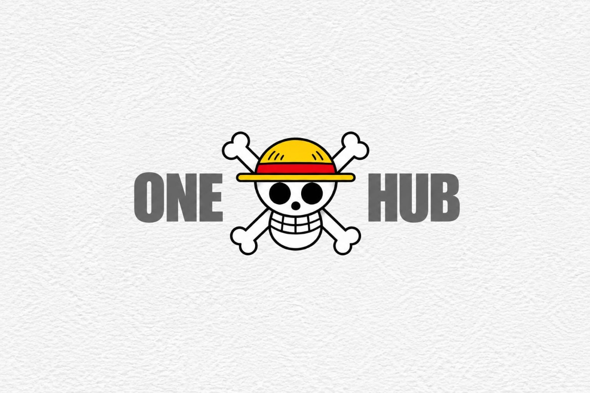

One Hub Travel
A travel website for exploring Sikkim with local guidance and thoughtful trip planning. I worked on the visual direction and the website experience.
- STATUS
- Live website
- PLACE
- Sikkim, India

Curious creator · Open to opportunities
I bring thoughtful design, modern web tools, and a little help from AI together to create useful digital experiences.
As long as I'm alive, there's still a chance.
I’m Aryan, a curious creator exploring web design, frontend development, and thoughtful digital experiences.
I enjoy learning how things work and turning ideas into clear, engaging experiences. I care about the details and believe good digital work should feel as considered as it looks.
AI is part of my toolkit for research, brainstorming, and repetitive tasks. I review and refine what it produces, keeping the decisions and creativity human-led.
A thoughtful, flexible process helps turn a rough idea into a useful digital experience.
Understand the goal, the people, and the problem worth solving.
Research, sketch ideas, and use AI to explore possibilities faster.
Shape the strongest idea into a clear, considered experience.
Bring it to life, test the details, and improve what needs attention.
Polish the finished work and make it ready for the world.
A SMALL, HONEST SELECTION
One live website and a few visual studies. The concepts are explorations, not launched products.
A travel website for exploring Sikkim with local guidance and thoughtful trip planning. I worked on the visual direction and the website experience.
A concept for a gentle daily planner: fewer demands on the screen, more room to choose what matters today.
A short visual exercise in using type, contrast, and a simple grid to make a small message feel unmistakable.